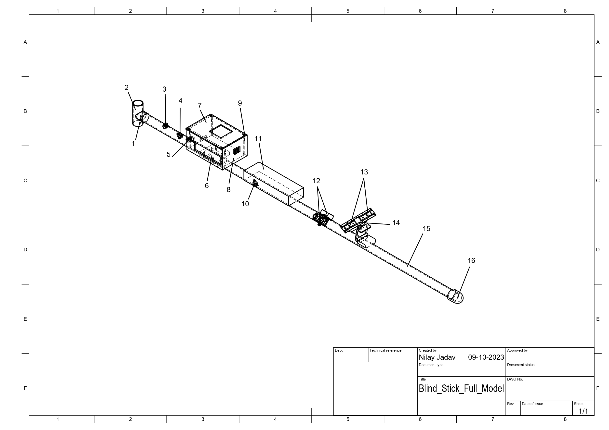
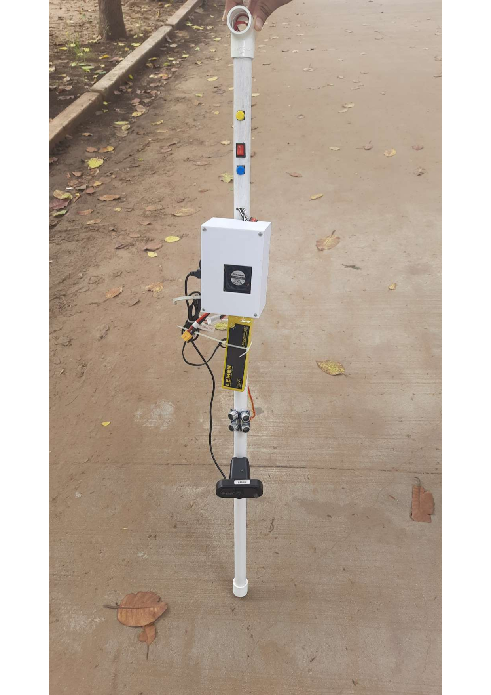
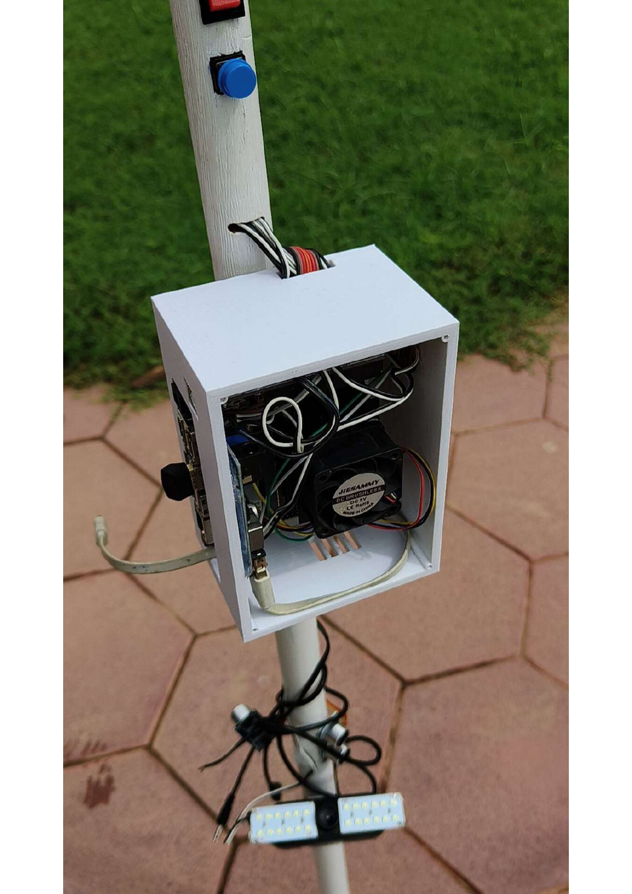

SightSense — Smart Assistive Blind Stick
"Patented" white cane that can see. SightSense is an ML-based assistive navigation device which I designed and 3D-printed, with some collegues. It does object detection, Bluetooth audio alerts, and vibration feedback. Received $2,400 in government funding.

SightSense drawing

SightSense prototype

SightSense prototype
The Problem
Traditional white canes are good for detecting ground-level obstacles, but they're blind to anything at chest or head height, overhanging branches, open cabinet doors, sign posts. Millions of visually impaired people navigate with a tool that covers maybe 30% of the danger zones around them. I wanted to fix the other 70%.
How I Built It
SightSense uses machine learning-based object detection to identify obstacles in the user's path at multiple heights. The enclosure was designed in CAD and 3D-printed to be ergonomic and lightweight enough for daily use, nobody's going to carry something heavy and awkward, no matter how smart it is. However, we could have used a Google AI hardware which could have made it more lighter. Our prototype was like atleast 4-5 pounds, which is not too light at all.
Feedback comes through two channels: Bluetooth audio delivered through an earpiece for spoken alerts ("obstacle ahead, two meters"), and vibration motors in the handle for haptic cues that scale with proximity. Users can choose one or both depending on their preference and environment, you might prefer vibration on a noisy street and audio at home.
I iterated on the sensor placement and enclosure design multiple times based on testing, refining detection angles to minimize blind spots while keeping the form factor practical.
Tech Stack
Demo Video
Results
- Patent application filed for the ML-based assistive navigation device
- $2,400 in government funding for development and testing
- Dual feedback system Bluetooth audio + vibration haptics
- 3D-printed ergonomic design increasing manufactuability
What I Took Away
This is probably the project I care about most. The engineering was challenging, but what really stuck with me was testing with actual users and watching the device change how they navigated a room. It also taught me to think about patents, translating a hardware innovation into IP documentation is its own skill. Good engineering isn't just about what works on the bench; it's about what works in someone's hand.